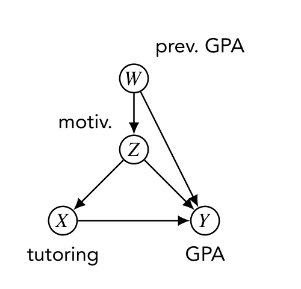
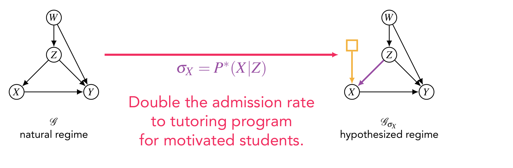
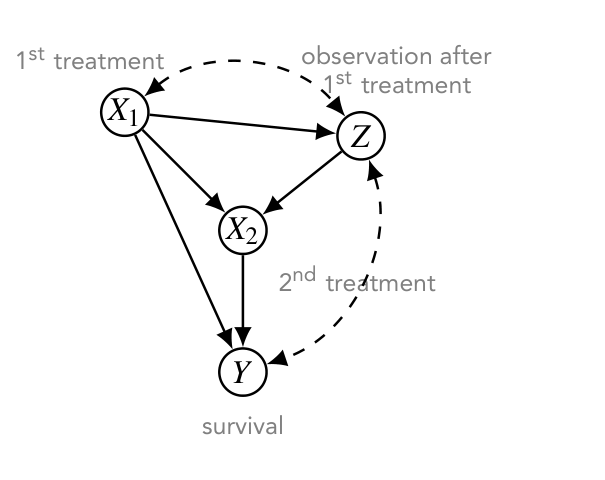
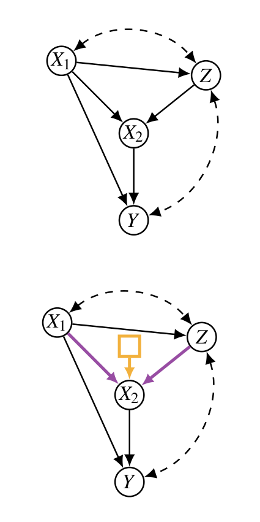
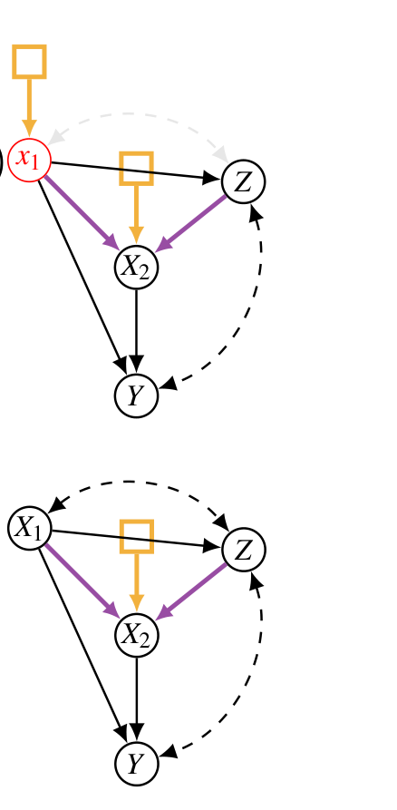
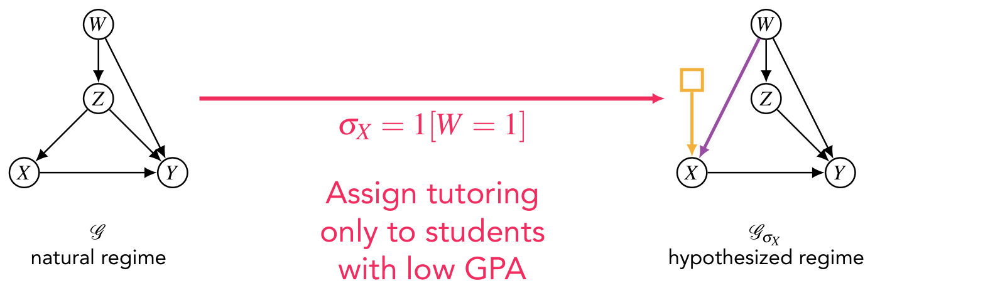
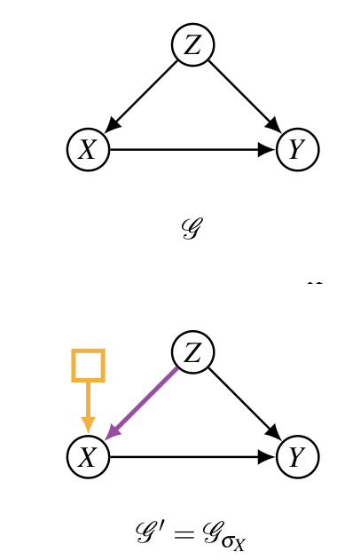
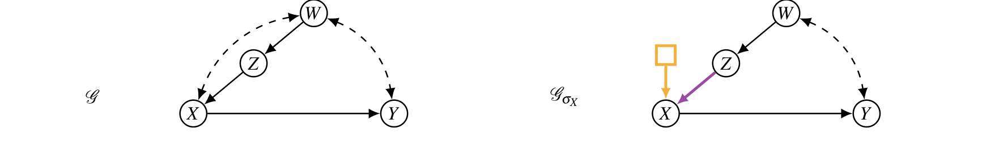

본 포스트는 서울대학교 GSDS Sanghack Lee 교수님의 Causal Inference 강의 자료(Soft-Intervention and σ-Calculus)를 바탕으로, 강의를 처음 듣는 독자도 논리적 흐름을 따라갈 수 있도록 재구성한 것입니다. 원본 슬라이드는 컬럼비아 대학교 Elias Bareinboim 교수의 자료를 각색한 것이며, 여기서 다루는 σ-계산법의 원 출처는 Juan David Correa & Elias Bareinboim, A Calculus for Stochastic Interventions: Causal Effect Identification and Surrogate Experiments, AAAI 2020입니다.
한 줄 요약 (TL;DR)
“개입이란 변수를 상수로 못 박는 행위가 아니라, 그 변수의 메커니즘을 다른 메커니즘으로 갈아 끼우는 행위다.”
\(do(x)\)는 모든 학생에게 과외를 강제하고 모든 환자에게 치료를 전원 투여하는, 자원과 순응도의 제약을 무시한 개입입니다. 현실의 정책은 대부분 조건부(conditional)이거나 확률적(stochastic)이며, 이런 소프트 개입(soft intervention) \(\sigma_X\) 아래에서는 개입 대상 변수가 부모와의 연결을 그대로 유지하거나, 분포만 바꾸거나, 심지어 새로운 부모를 얻기까지 합니다. 그 결과 “개입하면 들어오는 화살표가 사라진다”는 do-계산법의 시각적 직관이 통째로 무너지고, 겉보기에 멀쩡한 유도가 틀린 답을 내놓습니다. σ-계산법은 이 자리를 메우기 위해 개입 후 그래프 \(\mathcal{G}_{\sigma_X}\)에 레짐 노드(regime node)를 명시적으로 그려 넣고, 규칙의 적용 조건을 개입 전 그래프와 개입 후 그래프 양쪽에서 요구하는 세 규칙으로 do-계산법을 대체합니다. 나아가 C-인자(C-factor) 분해를 이용하면, 소프트 개입의 효과 역시 앞선 회차에서 배운
Identify계열의 체계적 절차로 기계적으로 식별할 수 있습니다.
소프트 개입의 동기 (Motivation for Soft-Interventions)
동기가 되는 예시 (Motivating Example)
어느 학교에서 운영 중인 과외 프로그램(tutoring program)을 생각해 보겠습니다. 학생 한 명당 우리가 관측하는 값은 다음 넷입니다.
- \(W\): 학기 시작 시점의 GPA (prev. GPA)
- \(Z\): 학생의 동기 수준(motivation) — 낮음/높음의 이진 변수
- \(X\): 과외를 받았는지 여부(tutoring)
- \(Y\): 학기 종료 시점의 GPA
이 네 변수 사이의 인과 구조는 다음과 같이 상정됩니다.
- 학생의 동기는 이전 GPA에 의존합니다(관측되지 않은 다른 요인들과 함께).
- 학생은 자신의 동기 수준에 따라 과외를 받습니다.
- 학기 말 GPA는 이전 GPA, 동기, 그리고 과외 여부의 함수입니다.

여기서 문제의식이 시작됩니다. 충분히 많은 데이터와 기계학습을 동원하면 다른 특성이 주어졌을 때의 GPA, 즉 \(P(y \mid w, z, x)\)를 작은 오차로 예측할 수 있습니다. 그러나
- 이 분포는 현재의, 자연스러운 레짐(natural regime)을 반영하는 모형일 뿐입니다.
- 우리가 진짜로 원하는 것은 학생들의 GPA를 개선하기 위한 의사결정입니다.
- 의사결정을 내린다는 것은 곧 현재의 레짐에 개입한다는 뜻입니다. 따라서 우리는 아직 실현되지 않은 가상의 상황에서 과외를 받은 학생들의 GPA를 예측하고자 합니다.
레짐(regime)이란 시스템이 작동하고 있는 양식(the mode a system operates on)을 뜻합니다.
이 강의 전체에서 가장 중요한 단어입니다. 앞으로 “개입한다”는 말은 “레짐을 바꾼다”는 말과 동의어로 쓰이며, 하나의 인과 모형은 개입의 종류만큼 많은 레짐 — 그리고 그만큼 많은 그래프 — 을 가질 수 있습니다.
지금까지 우리가 아는 것 (What we know so far)
관측분포 \(P(W, Z, X, Y)\)와 인과 그래프 \(\mathcal{G}\)로부터 우리가 얻을 수 있는 것은 무엇일까요? 앞선 회차에서 배운 대로, \(X\)가 \(Y\)에 미치는 인과효과를 do-계산법으로 식별할 수 있습니다.
\[ \begin{aligned} P(y \mid do(x)) &= \sum_z P(y \mid do(x), z)\, P(z \mid do(x)) && \text{($Z$로 조건화)} \\[4pt] &= \sum_z P(y \mid do(x), z)\, P(z) && \text{Rule 3: } (Z \perp\!\!\!\perp X)\ \text{in}\ \mathcal{G}_{\overline{X}} \\[4pt] &= \sum_z P(y \mid x, z)\, P(z) && \text{Rule 2: } (Y \perp\!\!\!\perp X \mid Z)\ \text{in}\ \mathcal{G}_{\underline{X}} \end{aligned} \]
각 줄을 뜯어 보면 다음과 같습니다.
- 첫째 줄은 단순한 전확률 법칙입니다. 개입 분포 안에서 \(Z\)에 대해 주변화했습니다.
- 둘째 줄(Rule 3): \(X\)로 들어오는 화살표를 모두 지운 그래프 \(\mathcal{G}_{\overline{X}}\)에서는 \(Z \to X\)가 사라지므로 \(Z\)와 \(X\)가 분리됩니다. 따라서 \(X\)에 개입해도 \(Z\)의 분포는 변하지 않습니다 — \(Z\)는 \(X\)의 조상이기 때문입니다.
- 셋째 줄(Rule 2): \(X\)에서 나가는 화살표를 지운 그래프 \(\mathcal{G}_{\underline{X}}\)에서 \(Z\)가 \(X\)와 \(Y\) 사이의 유일한 뒷문 경로 \(X \leftarrow Z \to Y\)를 막아 줍니다. 따라서 \(Z\)로 조건화한 뒤에는 \(X\)를 관측하는 것과 \(X\)에 개입하는 것이 같습니다.
결과적으로 얻은 것은 우리에게 익숙한 뒷문 조정 공식(back-door adjustment)입니다.
이제 데이터로부터 다음이 확인되었다고 합시다.
\[ P(Y = 1 \mid do(X = 1)) > P(Y = 1) \]
즉 \(do(X = 1)\)을 시행하면 학생들의 성적이 향상될 것으로 예측됩니다. 그런데 현실 세계에서 \(do(X = 1)\)이란 정확히 무엇을 뜻할까요?
\(\Longrightarrow\) 학교의 모든 학생 한 명도 빠짐없이 과외를 의무화하는 것입니다. 그런데 이 정책이 과연 실행 가능(realizable)할까요?
do( ) 개입의 구현 (Implementation of do( )-interventions)
의사결정 상황에서는, \(do(\cdot)\) 개입의 효과가 식별 가능하다고 하더라도 다음 문제들이 남습니다.
- 자원 부족: 대응하는 정책을 실행할 만한 자원이 없을 수 있습니다. 예컨대 학교의 모든 학생을 과외할 만큼의 교사와 시간이 없습니다.
- 효과의 보장 불가: 개입의 효과 자체가 보증되지 않습니다. 대표적으로 처치에 배정된 환자가 그것을 따르지 않는 비순응(non-compliance) 문제가 있습니다.
실용적인 관점에서는 실행 가능한 개입(realizable intervention)의 효과를 알고 싶어집니다. 원 강의는 다음 대조표로 이 간극을 보여 줍니다.
| do형 개입 (Do-like intervention) | 현실적 개입 (Realistic intervention) |
|---|---|
| 아무도 흡연하지 않도록 만든다 | 담배 소비를 현재의 20% 수준으로 줄인다 |
| 모든 환자에게 치료를 제공한다 | 환자가 위중한 상태일 때에만 치료를 시행한다 |
| 로봇 팔을 좌표 \((x, y, z)\)로 이동시킨다 | 로봇 팔을 \((x, y, z)\)로 작은 오차를 감수하고 이동시킨다 |
| 모든 지원자를 남성으로 표기한다 | 모든 지원자를 서류상으로만 남성으로 표기한다 |
네 사례의 오른쪽 열은 모두 “\(X\)를 어떤 값에 못 박는” 것이 아니라 “\(X\)를 만들어 내는 규칙을 바꾸는” 형태입니다.
- “20% 수준으로 줄인다”는 확률분포의 교체입니다.
- “위중할 때에만”은 다른 변수를 입력으로 받는 함수의 교체입니다.
- “작은 오차를 감수하고”는 결정론적 값 대신 그 값 주변의 분포를 지정합니다.
셋 모두 \(X\)가 여전히 확률변수로 남는다는 점이 핵심입니다. 이것이 \(do(x)\)와의 결정적 차이이고, 이 차이가 이후 모든 이론적 수정의 출발점이 됩니다.
레짐의 표준적 유형 (Canonical Types of Regimes)
이제 개입을 레짐 지시자 \(\sigma_X\)로 형식화하겠습니다. \(\sigma_X\)는 “변수 \(X\)가 어떤 메커니즘으로 생성되는가”를 지정하는 대상이며, 표준적인 네 가지 유형은 다음과 같습니다.
- 유휴/자연 (Idle/Natural): \(\sigma_X = f_X(pa_X, u_X)\)
- 아무것도 하지 않는 상태. 원래의 구조방정식이 그대로 작동합니다.
- 하드/원자적 (Hard/Atomic): \(\sigma_X = do(X = x)\)
- 변수 \(X\)를 상수 \(x\)로 고정합니다. do-계산법의 원래 논의는 대부분 이 유형만을 다루었습니다.
- 예: 모든 학생이 과외를 받는다.
- 조건부 (Conditional): \(\sigma_X = g(w)\)
- 관측 가능한 변수 집합 \(W\)에 의존하는 함수 \(g\)의 출력값으로 \(X\)를 설정합니다.
- 예: 학생은 GPA가 낮은 경우에 한하여 과외를 받는다.
- 확률적 (Stochastic): \(\sigma_X = P^*(x \mid w)\)
- 변수 집합 \(W\)에 조건부인 주어진 확률분포를 따르도록 \(X\)를 설정합니다.
- 예: GPA가 낮은 학생들은 전체 정원의 80%를 두고 추첨에 참여하고, 나머지 관심 학생들은 남은 20%를 두고 추첨에 참여한다.
이 네 유형 사이의 관계를 정리해 두면 이후 논의가 훨씬 수월합니다.
- 유휴 레짐은 “개입하지 않음”을 개입의 한 종류로 편입시킨 것입니다. 이렇게 두면 자연 레짐과 개입 레짐을 같은 언어로 비교할 수 있습니다.
- 하드 개입은 조건부 개입의 특수한 경우입니다. \(g\)가 상수 함수 \(g(w) \equiv x\)이면 \(do(X = x)\)가 됩니다.
- 조건부 개입은 확률적 개입의 특수한 경우입니다. \(P^*(x \mid w)\)가 각 \(w\)에서 한 점에 질량을 몰아주는 퇴화 분포이면 조건부 개입이 됩니다.
- 따라서 확률적 개입 \(\supseteq\) 조건부 개입 \(\supseteq\) 하드 개입이며, 앞의 둘을 통칭하여 소프트 개입(soft intervention)이라 부릅니다.
레짐의 변화 (Changes in Regime)
개입이 그래프에 어떻게 새겨지는지를 정리하겠습니다.
- 어떤 개입도 가해지지 않은, 데이터가 생성된 교란 이전의 세계를 자연 레짐(natural regime)이라 부르며, 이는 그래프 \(\mathcal{G}\)에 대응합니다.
- 개입이 이루어지고 나면 새로운 레짐이 생기며, 이 레짐은 개입에 관여된 변수들의 메커니즘에서만 이전 레짐과 다릅니다.
- 개입 \(\sigma_X\)가 유도하는 새 레짐에 대응하는 그래프를 \(\mathcal{G}_{\sigma_X}\)로 표기하며, 이 그래프에는 개입된 변수를 가리키는 레짐 노드(regime node)가 함께 표시됩니다. 앞으로 등장하는 그림에서 주황색 사각형 \(\square\)에서 나와 \(X\)로 들어가는 화살표가 바로 그것입니다.
레짐 노드는 단순한 장식이 아니라, “이 변수의 메커니즘이 교체되었다”는 사실 자체를 그래프의 일급 시민으로 승격시키는 장치입니다.
\(do(x)\)에서는 개입 사실을 그래프에 표시할 필요가 없었습니다. 들어오는 화살표를 전부 지워 버리면 그것이 곧 개입의 표시였기 때문입니다. 그러나 소프트 개입에서는 화살표가 지워지지 않을 수 있으므로, “지움” 이외의 표기 수단이 반드시 필요합니다. 레짐 노드가 그 역할을 합니다.
환원 (Reduction)
이것은 새로운 종류의 문제인가? (Is this a new class of problems?)
여기서 자연스럽게 떠오르는 질문이 있습니다.
- 우리는 하드 개입의 효과 식별을 아주 잘 이해하고 있습니다. 깔끔한 규칙(do-계산법)과 알고리즘(ID 알고리즘)이 이미 존재합니다.
- 그렇다면 그 지식을 활용해 소프트(조건부·확률적) 개입을 식별할 수 있을까요? 후자의 문제는 전자로 환원(reduce)되는 것일까요? 된다면 어떻게 될까요?
이 절의 결론을 미리 말씀드리면, 어떤 경우에는 아름답게 환원되고 어떤 경우에는 처참하게 실패합니다. 두 예시를 차례로 보겠습니다.
환원 가능한 예시 (A Reducible Example)
앞의 과외 예시로 돌아가, 자연 레짐에서 다음이 성립한다고 합시다.
\[ P(X = 1 \mid Z = 1) = 0.3 \]
즉 정상적인 조건에서는 동기가 높은 학생 중 30%만이 과외 서비스를 받습니다. 여기서 우리가 묻고 싶은 것은 이것입니다.
이 비율을 60%로 올리면 효과가 어떻게 될까요? 즉 \(P^*(X = 1 \mid Z = 1) = 0.6\)인 확률적 개입 \(\sigma_X = P^*(X \mid Z)\)의 효과는 무엇입니까?

환원 가능한 예시 — 유도 (A Reducible Example — Derivation)
이 개입의 효과는 다음과 같이 유도됩니다.
\[ \begin{aligned} P(y; \sigma_X) &= \sum_z P(y \mid z; \sigma_X)\, P(z; \sigma_X) \\[4pt] &= \sum_z P(y \mid z; \sigma_X)\, P(z) \\[4pt] &= \sum_{z,x} P(y \mid z, x; \sigma_X)\, P(x \mid z; \sigma_X)\, P(z) \\[4pt] &= \sum_{z,x} P(y \mid z, x; \sigma_X)\, P^*(x \mid z)\, P(z) \\[4pt] &= \sum_{z,x} P(y \mid z, x)\, P^*(x \mid z)\, P(z) \end{aligned} \]
각 단계가 어떤 근거로 성립하는지 짚어 보겠습니다.
- 1단계: 전확률 법칙으로 \(Z\)에 대해 주변화합니다.
- 2단계: \(P(z; \sigma_X) = P(z)\). \(Z\)는 \(X\)의 조상이고 개입은 \(X\)의 메커니즘만 교체하므로, \(Z\)의 분포는 레짐 변화의 영향을 받지 않습니다.
- 3단계: 한 번 더 \(X\)에 대해 주변화하며 연쇄법칙을 적용합니다.
- 4단계: \(P(x \mid z; \sigma_X) = P^*(x \mid z)\). 이것이 개입의 정의 그 자체입니다. 새 레짐에서 \(X\)가 따르는 조건부 분포가 곧 \(P^*\)입니다.
- 5단계: \(P(y \mid z, x; \sigma_X) = P(y \mid z, x)\). \(Y\)의 메커니즘은 건드리지 않았고, \(Y\)의 부모들(\(W, Z, X\)) 중 \(X\)의 값이 어떻게 만들어졌는지는 \(Y\)의 조건부 분포와 무관합니다. 이것이 모듈성(modularity) 가정의 직접적인 귀결입니다.
위 유도는 \(W\)를 명시적으로 주변화하지 않았습니다. 실제로 \(\mathcal{G}_{\sigma_X}\)에서의 절단 인수분해(truncated factorization)를 그대로 쓰면
\[ P(y; \sigma_X) = \sum_{w,z,x} P(w)\, P(z \mid w)\, P^*(x \mid z)\, P(y \mid w, z, x) \]
가 됩니다. 여기서 \(W\)에 대한 합을 안쪽으로 밀어 넣으면 \(\sum_w P(y \mid w,z,x) P(w \mid z, x)\)가 되는데, 자연 레짐 \(\mathcal{G}\)에서 \(X\)의 부모가 \(Z\)뿐이므로 \(W \perp\!\!\!\perp X \mid Z\)가 성립하여 \(P(w \mid z, x) = P(w \mid z)\)이고, 결국 이 합은 \(P(y \mid z, x)\)로 접힙니다. 두 표현이 같은 양을 가리킨다는 뜻이며, 슬라이드의 간결한 형태는 이 접힘을 미리 수행한 결과입니다.
그런데 여기서 던져야 할 질문이 있습니다.
이런 (do-계산법과 유사한) 유도 전략이 문제를 푸는 데 충분할까요?
또 다른 예시 (Another Example)
이번에는 한 환자가 연속된 처치(sequence of treatments)를 받는 상황을 생각해 보겠습니다. 편의상 두 번이라고 하겠습니다.
- 첫 번째 처치 \(X_1\)이 시행됩니다.
- 이후 두 번째 의사가 환자를 진찰하여 \(Z = z\)를 관측하고, 그에 따라 두 번째 처치 \(X_2\)를 결정합니다.
- 최종적으로 환자는 생존하거나 하지 않습니다. 각각 \(Y = 1\), \(Y = 0\)입니다.

우리가 알고 싶은 것은 다음 개입의 효과입니다.
\(X_1 = x_1\)으로 고정하되, \(X_2 = g(x_1, z)\)로 두는 개입. 즉 두 번째 처치는 (i) 첫 처치의 값 \(x_1\)이 무엇이었는지와 (ii) 관측치 \(Z\)에 따라 처방됩니다.
이것은 다음 중 어느 표기로도 쓸 수 있습니다.
\[ do(x_1),\ do(X_2 = g(x_1, z)) \qquad \text{또는} \qquad \sigma_X = \{X_1 = x_1,\ X_2 = g(x_1, z)\} \]
\(X_1\)에 대해서는 하드 개입을, \(X_2\)에 대해서는 조건부 개입을 동시에 가한 혼합 형태라는 점에 유의하시기 바랍니다.
또 다른 예시 — 잘못된 유도 (Another Example — Wrong Derivation)
이제 의도적으로 틀린 유도를 하나 보겠습니다. 어디가 잘못되었는지를 찾는 것이 이 절의 목적입니다.
\[ \begin{aligned} &P(y \mid do(x_1), do(X_2 = g(x_1, z))) \\[4pt] &\quad = P(y \mid x_1, do(X_2 = g(x_1, z))) && \text{Rule 2} \\[4pt] &\quad = \sum_z P(y \mid x_1, do(X_2 = g(x_1,z)), z)\, P(z \mid x_1, do(X_2 = g(x_1,z))) \\[4pt] &\quad = \sum_z P(y \mid x_1, do(X_2 = g(x_1,z)), z)\, P(z \mid x_1) && \text{Rule 3} \\[4pt] &\quad = \sum_z P(y \mid x_1, x_2 = g(x_1,z), z)\, P(z \mid x_1) \end{aligned} \]
문제가 되는 것은 첫 번째 등호입니다. 이 단계는 다음 근거로 정당화되었습니다.
\[ \text{Rule 2:}\quad (Y \perp\!\!\!\perp X_1 \mid X_2) \ \text{in}\ \mathcal{G}_{\overline{X_2}\,\underline{X_1}} \]

원 강의는 오류를 다음과 같이 지적합니다.
- \(do(x_2 = g(x_1, z))\) 아래에서 \(X_2\)로 들어오는 엣지들은 여전히 활성 상태입니다. 따라서 \(\mathcal{G}_{\overline{X_2}\,\underline{X_1}}\)는 애초에 들여다보아야 할 그래프가 아닙니다.
- 이 규칙 적용은 \(\mathcal{G}_{\sigma_{X_2}\underline{X_1}} = \mathcal{G}_{\underline{X_1}}\)에 대해 검토되어야 하며, 그 그래프에서는 분리가 성립하지 않습니다. \(X_2\)에 대한 개입이 주어진 상태에서 다음 경로가 살아 있기 때문입니다.
\[ X_1 \leftrightarrow Z \to X_2 \to Y \]
\(do(X_2 = g(x_1, z))\)라는 표기에 \(do\)가 들어 있다는 이유로 “\(X_2\)의 부모 화살표가 잘린다”고 반사적으로 생각한 것이 함정입니다.
\(g\)가 \(z\)를 인자로 받는 함수인 이상, \(Z\)는 여전히 \(X_2\)의 값에 영향을 줍니다. 즉 이 개입은 이름만 \(do\)일 뿐 실질은 조건부 개입이며, \(Z \to X_2\) 화살표는 살아남습니다. 살아남은 그 화살표가 \(X_1 \leftrightarrow Z \to X_2 \to Y\)라는 경로를 열어 두어, \(X_2\)로 조건화해도 \(X_1\)과 \(Y\)가 분리되지 않게 만듭니다.
do-계산법의 규칙 자체가 틀린 것이 아니라, 규칙이 참조하는 그래프를 만들어 내는 절차가 소프트 개입에서는 다르다는 것이 문제의 본질입니다.
do-계산법의 직관이 무너지는 지점 (Where do-calculus intuition breaks)
이제 실패의 원인을 일반적인 형태로 정리할 수 있습니다.
\(do\) 개입에서는 개입된 변수와 그 부모들 사이의 연결이 언제나 사라집니다. 그러나 소프트 개입은 다음과 같이 행동할 수 있습니다.
- 부모들과의 의존성을 전부 또는 일부 유지하거나,
- 그 분포만 바꾸거나,
- 심지어 새로운 의존성을 추가하기까지 합니다.
세 번째 항목은 특히 반직관적입니다. 개입이 화살표를 추가한다는 것은 do-계산법의 세계에서는 일어날 수 없는 일이며, 이 사례는 잠시 뒤 “또 다른 개입” 절에서 실제로 등장합니다.
σ-계산법 (σ-calculus)
이 간극을 메우기 위해 Correa & Bareinboim(2020)이 제시한 것이 σ-계산법(σ-calculus)입니다. 강의는 우선 단순화된 버전을 제시합니다.
\(\mathbf{X}, \mathbf{Y}, \mathbf{Z}\)는 \(\mathbf{V}\)의 서로소인 부분집합이고, \(\mathbf{T}, \mathbf{W} \subseteq \mathbf{V} \setminus (\mathbf{Z} \cup \mathbf{Y})\) 역시 서로소입니다.
규칙 1 — 관측의 삽입/삭제 (Insertion/deletion of observations)
\[ P(\mathbf{y} \mid \mathbf{w}, \mathbf{t}; \sigma_{\mathbf{X}}) = P(\mathbf{y} \mid \mathbf{w}; \sigma_{\mathbf{X}}) \qquad \text{if } (\mathbf{Y} \perp\!\!\!\perp \mathbf{T} \mid \mathbf{W}) \text{ in } \mathcal{G}_{\sigma_{\mathbf{X}}} \]
규칙 2 — 관측 하의 레짐 교체 (Change of regimes under observation)
\[ P(\mathbf{y} \mid \mathbf{w}, \mathbf{x}; \sigma_{\mathbf{X}}) = P(\mathbf{y} \mid \mathbf{w}, \mathbf{x}) \qquad \text{if } (\mathbf{Y} \perp\!\!\!\perp \mathbf{X} \mid \mathbf{W}) \text{ in } \mathcal{G}_{\sigma_{\mathbf{X}}\underline{\mathbf{X}}} \text{ and } \mathcal{G}_{\underline{\mathbf{X}}} \]
규칙 3 — 관측 없는 레짐 교체 (Change of regimes without observations)
\[ P(\mathbf{y} \mid \mathbf{w}; \sigma_{\mathbf{X}}) = P(\mathbf{y} \mid \mathbf{w}) \qquad \text{if } (\mathbf{Y} \perp\!\!\!\perp \mathbf{X} \mid \mathbf{W}) \text{ in } \mathcal{G}_{\sigma_{\mathbf{X}}\overline{\mathbf{X}(\mathbf{W})}} \text{ and } \mathcal{G}_{\overline{\mathbf{X}(\mathbf{W})}} \]
세 규칙을 do-계산법의 대응 규칙과 나란히 놓고 보면 차이가 선명해지므로, 그 작업을 다음 절에서 본격적으로 하겠습니다. 다만 여기서 미리 두 가지만 짚어 두겠습니다.
- 규칙 1은 그래프를 하나만 봅니다. 개입 후 그래프 \(\mathcal{G}_{\sigma_{\mathbf{X}}}\)에서의 분리만 확인하면 됩니다. 관측을 넣고 빼는 조작은 어차피 하나의 레짐 안에서 일어나기 때문입니다.
- 규칙 2와 3은 그래프를 두 개 봅니다. 등호의 왼쪽은 개입 레짐, 오른쪽은 자연 레짐의 양이므로, 양쪽 레짐 모두에서 해당 독립성이 성립해야 두 양을 맞바꿀 수 있습니다. 이것이 do-계산법과의 가장 두드러진 형식적 차이입니다.
do-계산법과의 비교 (Comparisons to do-calculus)
결정론성이 사라진다
먼저 근본적인 관찰 하나에서 출발합니다.
Remark. \(do(\mathbf{x})\) 개입 아래에서 확률변수 \(\mathbf{x}\)는 결정론적입니다. 따라서 \[P(\mathbf{y} \mid do(\mathbf{x}), \mathbf{w}) = P(\mathbf{y} \mid do(\mathbf{x}), \mathbf{w}, \mathbf{x})\] 가 성립합니다. 그러나 비원자적(non-atomic) 개입 아래에서는 이것이 반드시 성립하지는 않습니다.
가장 단순한 그래프 \(X \to Y\)에서조차 다음과 같이 됩니다.
\[ P(y; \sigma_X) \neq P(y \mid x; \sigma_X) \]
왜 그럴까요? \(do(X = x)\) 아래에서는 \(X\)가 확률 1로 \(x\)이므로, \(X = x\)로 조건화하는 것은 아무 정보도 추가하지 않습니다(확률 1인 사건으로의 조건화). 반면 \(\sigma_X = P^*(x)\) 아래에서 \(X\)는 여전히 퍼져 있는 확률변수이므로, \(X = x\)를 관측하는 것은 실질적인 정보를 주며 \(Y\)의 분포를 바꿉니다.
이 관찰이 사소해 보이지만, 실제로는 do-계산법을 소프트 개입에 무비판적으로 옮겨 쓸 때 발생하는 오류의 상당수가 여기서 비롯됩니다.
\(do\) 표기에 익숙해진 사람은 \(P(y \mid do(x))\)와 \(P(y \mid do(x), x)\)를 자유롭게 오갑니다. 그러나 \(\sigma_X\) 세계에서 이 둘은 다른 양이며, 개입 후 분포(\(P(y;\sigma_X)\))와 개입 후 조건부 분포(\(P(y \mid x; \sigma_X)\))를 구분하지 않는 순간 유도 전체가 조용히 어긋납니다.
규칙별 대조 (Rule-by-rule comparison)
이제 세 규칙을 하나씩 대조하겠습니다.
규칙 1 (Rule 1)
| 조건 | |
|---|---|
| do-계산법 | \(P(y \mid do(x), w, t) = P(y \mid do(x), w)\) if \((Y \perp\!\!\!\perp T \mid W, X)\) in \(\mathcal{G}_{\overline{X}}\) |
| σ-계산법 | \(P(y \mid w, t; \sigma_X) = P(y \mid w; \sigma_X)\) if \((Y \perp\!\!\!\perp T \mid W)\) in \(\mathcal{G}_{\sigma_X}\) |
그래프는 개입의 명세(specification)에 의존합니다.
do-계산법에서는 개입 후 그래프가 언제나 \(\mathcal{G}_{\overline{X}}\) 하나로 정해집니다. 반면 σ-계산법에서 \(\mathcal{G}_{\sigma_X}\)가 어떤 모양인지는 \(\sigma_X\)를 어떻게 지정했느냐에 따라 달라집니다. 같은 \(X\)에 개입하더라도 \(\sigma_X = P^*(X \mid Z)\)인지 \(\sigma_X = P^*(X \mid W)\)인지에 따라 전혀 다른 그래프가 나오고, 따라서 전혀 다른 독립성이 성립합니다. 조건부 집합에서 \(X\)가 빠진 것도 눈여겨볼 만한데, \(\sigma_X\) 아래에서 \(X\)는 여전히 확률변수이므로 do-계산법처럼 자동으로 조건에 포함시킬 이유가 없기 때문입니다.
규칙 2 (Rule 2)
| 조건 | |
|---|---|
| do-계산법 | \(P(y \mid do(x), w) = P(y \mid x, w)\) if \((Y \perp\!\!\!\perp X \mid W)\) in \(\mathcal{G}_{\underline{X}}\) |
| σ-계산법 | \(P(y \mid x, w; \sigma_X) = P(y \mid x, w)\) if \((Y \perp\!\!\!\perp X \mid W)\) in \(\mathcal{G}_{\sigma_X \underline{X}}\) and \(\mathcal{G}_{\underline{X}}\) |
규칙 3 (Rule 3)
| 조건 | |
|---|---|
| do-계산법 | \(P(y \mid do(x), w) = P(y \mid w)\) if \((Y \perp\!\!\!\perp X \mid W)\) in \(\mathcal{G}_{\overline{X(W)}}\) |
| σ-계산법 | \(P(y \mid w; \sigma_X) = P(y \mid w)\) if \((Y \perp\!\!\!\perp X \mid W)\) in \(\mathcal{G}_{\sigma_X \overline{X(W)}}\) and \(\mathcal{G}_{\overline{X(W)}}\) |
독립성이 개입 전 그래프와 개입 후 그래프 모두에서 성립해야 합니다.
규칙 2와 3의 등호는 서로 다른 레짐에 속한 두 양을 맞바꾸는 조작입니다. 좌변은 \(\sigma_X\) 레짐의 양이고 우변은 자연 레짐의 양입니다.
do-계산법에서는 이 비대칭이 문제가 되지 않았습니다. \(\mathcal{G}_{\underline{X}}\)처럼 엣지를 지운 그래프 하나가 두 레짐에 공통으로 남아 있는 구조를 대변했기 때문입니다. 그러나 소프트 개입에서는 개입 후 그래프가 개입 전 그래프에서 엣지를 뺀 결과라는 보장이 없습니다 — 엣지가 더해질 수도 있습니다. 그러므로 한쪽 그래프에서의 분리는 다른 쪽을 함의하지 않으며, 양쪽을 각각 확인하는 수밖에 없습니다.
Rule 2 다시 보기 (Revisiting: Rule 2)
앞서 실패했던 순차적 처치 예시로 돌아가, 이번에는 σ-계산법의 규칙 2를 제대로 적용해 보겠습니다. 먼저
\[ \begin{aligned} P(y \mid do(x_1), do(X_2 = g(x_1,z))) &= P(y \mid x_1, do(x_1), do(X_2 = g(x_1,z))) \\[4pt] &= P(y \mid x_1; \sigma_{X_1, X_2}) \\[4pt] &\overset{?}{=} P(y \mid x_1; \sigma_{X_2}) \end{aligned} \]
마지막 등호가 성립하려면 규칙 2를 불러야 합니다. 그리고 규칙 2를 부르려면 두 그래프 모두에서 \(X_1\)에서 \(Y\)로 가는 뒷문 경로의 부재를 확인해야 합니다.

- 규칙 2를 발동하려면 오른쪽 두 그래프에서 \(X_1\)으로부터 \(Y\)로 향하는 뒷문 경로가 없어야 합니다.
- 그런데 이 조건은 첫 번째 그래프에서만 성립합니다. 따라서 규칙을 적용할 수 없습니다.
앞선 “잘못된 유도”가 왜 틀렸는지가 이제 형식적으로 설명됩니다. 잘못된 유도는 두 그래프 중 조건이 성립하는 쪽만 보고 규칙을 발동한 것입니다. σ-계산법이 “양쪽 그래프”를 명시적으로 요구하는 이유가 바로 이런 오류를 구조적으로 차단하기 위함입니다.
또 다른 개입 (Another Intervention)
이번에는 앞의 과외 예시로 돌아가되, 완전히 다른 성격의 정책을 검토해 보겠습니다.
- 자원이 제한적이므로 과외가 가장 필요한 학생들에게 집중하고자 합니다.
- 이제부터 GPA가 낮은 학생은 반드시 과외를 받아야 하고, 서비스는 그들에게만 제공됩니다. 즉
\[ P^*(X = 1 \mid W = 0) = 1, \qquad P^*(X = 1 \mid W = 1) = 0 \]
슬라이드는 이 개입을 \(\sigma_X = \mathbb{1}[W = 1]\)이라는 지시함수 형태로 표기합니다. 표기의 세부와 무관하게 수학적으로 결정적인 사실은 다음 하나입니다.
새 레짐에서 \(X\)는 \(W\)만의 결정론적 함수가 되었습니다. 따라서 \(Z\)는 더 이상 \(X\)의 부모가 아니며, 대신 \(W\)가 \(X\)의 새로운 부모가 됩니다.

\(\mathcal{G}_{\overline{X}}\)는 언제나 \(\mathcal{G}\)의 부분그래프입니다. 엣지를 지우기만 하기 때문입니다.
그러나 위 그림의 \(\mathcal{G}_{\sigma_X}\)는 \(\mathcal{G}\)에 없던 엣지 \(W \to X\)를 가지고 있으므로 부분그래프가 아닙니다. 개입 후 그래프가 개입 전 그래프의 부분그래프라는 전제 위에 세워진 모든 논증 — 예컨대 “개입은 경로를 열 수 없고 닫기만 한다”는 식의 추론 — 은 이 시점에서 무효가 됩니다.
예시 — 또 다른 개입 (Example — Another Intervention)
\(P(y; \sigma_X)\)를 구해 보겠습니다. 강의는 먼저 어떤 규칙이 필요한지 자문합니다.
- \(P(y; \sigma_X) = \sum_{z,x} P(y \mid x, z; \sigma_X) P(x \mid z; \sigma_X) P(z; \sigma_X)\)로 쓸 수 있을까요?
- \(P(y \mid x, z; \sigma_X) = P(y \mid x, z)\)일까요?
- \(P(y \mid x, w; \sigma_X) = P(y \mid x, w)\)일까요?
\(W\)를 함께 다루는 쪽이 올바른 선택이며, 완성된 유도는 다음과 같습니다.
\[ \begin{aligned} P(y; \sigma_X) &= \sum_{w,z,x} P(y \mid x, w, z; \sigma_X)\, P(x \mid w, z; \sigma_X)\, P(w, z; \sigma_X) \\[4pt] &= \sum_{w,z,x} P(y \mid x, w, z; \sigma_X)\, P(x \mid w; \sigma_X)\, P(w, z; \sigma_X) && \text{Rule 1} \\[4pt] &= \sum_{w,z,x} P(y \mid x, w, z)\, P(x \mid w; \sigma_X)\, P(w, z; \sigma_X) && \text{Rule 2} \\[4pt] &= \sum_{w,z,x} P(y \mid x, w, z)\, P(x \mid w; \sigma_X)\, P(w, z) && \text{Rule 3} \end{aligned} \]
세 규칙이 각각 무슨 일을 했는지 정리하면 이렇습니다.
- Rule 1 (관측의 삭제): \(P(x \mid w, z; \sigma_X)\)에서 \(z\)를 지웠습니다. \(\mathcal{G}_{\sigma_X}\)에서 \(X\)의 부모는 \(W\)뿐이므로 \((X \perp\!\!\!\perp Z \mid W)\)가 성립합니다. 개입 후 그래프 하나만 확인하면 되는 규칙이었음을 상기하시기 바랍니다.
- Rule 2 (관측 하의 레짐 교체): \(P(y \mid x, w, z; \sigma_X)\)를 자연 레짐의 \(P(y \mid x, w, z)\)로 바꾸었습니다. \(Y\)의 메커니즘은 손대지 않았고, \(Y\)의 부모 전체(\(W, Z, X\))로 조건화되어 있으므로 두 레짐에서 같은 값을 갖습니다.
- Rule 3 (관측 없는 레짐 교체): \(P(w, z; \sigma_X)\)를 \(P(w, z)\)로 바꾸었습니다. \(W\)와 \(Z\)는 모두 \(X\)의 비후손이므로 \(X\)의 메커니즘 교체에 영향받지 않습니다.
남은 항 \(P(x \mid w; \sigma_X)\)는 우리가 직접 설계한 정책 그 자체이므로 이미 알고 있는 양입니다. 따라서 이 소프트 개입의 효과는 관측분포와 정책 명세만으로 완전히 식별됩니다.
C-인자와 소프트 개입 (C-Factors and Soft-Intervention)
앞 절까지는 규칙을 손으로 적용했습니다. 이제 기계적으로 굴러가는 절차를 만들 차례입니다. 도구는 앞선 회차(알고리즘적 식별)에서 배운 C-인자(C-factor)입니다.
소프트 개입의 인과효과 (Causal Effect of Soft-Interventions)
다음 인과 다이어그램을 갖는 모형 \(\mathcal{M}\)을 생각해 보겠습니다.

자연 레짐에서 결합분포를 잠재변수까지 포함해 전개하면 다음과 같습니다.
\[ \begin{aligned} P(z, x, y) &= \sum_{\mathbf{u}} P(z, x, y, \mathbf{u}) \\[4pt] &= \sum_{\mathbf{u}_Z} P(z \mid \mathbf{u}_Z) P(\mathbf{u}_Z) \sum_{\mathbf{u}_X} P(x \mid z, \mathbf{u}_X) P(\mathbf{u}_X) \sum_{\mathbf{u}_Y} P(y \mid x, z, \mathbf{u}_Y) P(\mathbf{u}_Y) \end{aligned} \]
이 세 덩어리를 각각 C-인자로 이름 붙이면
\[ P(z, x, y) = Q[Z]\, Q[X]\, Q[Y] \]
이제 \(\mathcal{M}' = \mathcal{M}_{\sigma_X}\)라 두면, 대응하는 인과 다이어그램은 \(\mathcal{G}' = \mathcal{G}_{\sigma_X}\)이고
\[ \begin{aligned} P'(z, x, y) &= \sum_{\mathbf{u}} P'(z, x, y, \mathbf{u}) \\[4pt] &= \sum_{\mathbf{u}_Z} P'(z \mid \mathbf{u}_Z) P(\mathbf{u}_Z) \sum_{\mathbf{u}'_X} P'(x \mid z, \mathbf{u}'_X) P(\mathbf{u}'_X) \sum_{\mathbf{u}_Y} P'(y \mid x, z, \mathbf{u}_Y) P(\mathbf{u}_Y) \end{aligned} \]
\[ P(z, x, y; \sigma_X) = Q[Z]\, Q[X; \sigma_X]\, Q[Y] \]
개입은 인수분해에서 정확히 한 인자만 교체합니다.
\[ Q[Z]\,\underbrace{Q[X]}_{\text{교체 대상}}\,Q[Y] \quad\longrightarrow\quad Q[Z]\,\underbrace{Q[X; \sigma_X]}_{\text{새 메커니즘}}\,Q[Y] \]
여기서 결정적인 것은 \(\mathbf{u}_X\)가 새로운 \(\mathbf{u}'_X\)로 교체되었다는 점입니다. 새 메커니즘은 자체의 독립적인 잡음을 가지므로, \(X\)가 다른 변수와 공유하던 잠재 교란자와의 연결이 끊어집니다. 잠시 뒤 보게 될 예시에서 \(X \leftrightarrow Y\) 양방향 엣지가 개입 후 사라지는 이유가 바로 이것입니다.
체계적 식별: 예시 1 (Systematic Identification: Example 1)
개입 \(\sigma_X = P^*(X \mid W)\)를 생각해 보겠습니다.
두 레짐에서의 인수분해는 다음과 같습니다.
\[ P(\mathbf{v}) = Q[X, Y]\, Q[W]\, Q[Z] \]
\[ \begin{aligned} P(\mathbf{v}; \sigma_X) &= Q[X; \sigma_X]\, Q[W; \sigma_X]\, Q[Z; \sigma_X]\, Q[Y; \sigma_X] \\[4pt] &= Q[X; \sigma_X]\, Q[W]\, Q[Z]\, Q[Y] \end{aligned} \]
\[ P(y; \sigma_X) = \sum_{x,w,z} Q[X; \sigma_X]\, Q[W]\, Q[Z]\, Q[Y] \]
두 번째 등호는 \(X\) 이외의 변수들의 메커니즘은 건드리지 않았다는 모듈성에서 옵니다. C-인자의 정의는 다음과 같습니다.
\[ Q[\mathbf{C}](\mathbf{c}, \mathbf{pa}_{\mathbf{C}}) = \sum_{\mathbf{u}(\mathbf{C})} P(\mathbf{u}(\mathbf{C})) \prod_{V_i \in \mathbf{C}} P(v_i \mid \mathbf{pa}_i, \mathbf{u}_i), \qquad \mathbf{U}(\mathbf{C}) = \bigcup_{V_i \in \mathbf{C}} \mathbf{U}_i \]
전략은 다음과 같습니다.
- 하위 목표: 각각의 \(Q[D_i]\)를 식별한다.
- \(Q[D_4] = Q[X; \sigma_X]\)는 \(\sigma_X\)의 정의에 의해 이미 주어져 있습니다. 우리가 설계한 정책이므로 알고 있는 양입니다.
- 나머지 \(Q[D_1] = Q[Y]\), \(Q[D_2] = Q[W]\), \(Q[D_3] = Q[Z]\)는 자연 레짐의 C-인자이므로 관측분포에서 끌어와야 합니다.
자연 레짐의 C-성분들에 대해, 위상 순서 \(X, W, Z, Y\)를 따라 다음 항등식을 적용합니다.
\[ Q[C_j] = \prod_{V_i \in C_j} \frac{Q[V^{\le i}]}{Q[V^{\le i-1}]}, \qquad Q[V^{\le i}] = \sum_{v^{>i}} Q[V] \]
계산 결과는 다음과 같습니다.
\[ \begin{aligned} Q[C_1] &= \frac{P(x)}{1} \cdot \frac{P(x, w, z, y)}{P(x, w, z)} = P(x)\, P(y \mid x, w, z) \\[6pt] Q[C_2] &= \frac{P(x, w)}{P(x)} = P(w \mid x) = P(w) \\[6pt] Q[C_3] &= \frac{P(x, w, z)}{P(x, w)} = P(z \mid w, x) \end{aligned} \]
마지막 등호가 성립하는 것은 \(\mathcal{G}\)에서 \(W\)와 \(X\)가 주변적으로 독립이기 때문입니다.
두 변수 모두 부모가 없는 뿌리 노드이고, 이들을 잇는 유일한 경로는 \(W \to Z \leftarrow X\)인데 \(Z\)는 충돌자(collider)이므로 조건화하지 않으면 경로가 닫혀 있습니다. 이 사실이 뒤의 최종 공식에서 \(P(w)\)가 단독으로 등장하는 근거가 됩니다.
이제 각 \(Q[D_i]\)를 자연 레짐의 C-인자로부터 뽑아내야 하며, 여기서 Identify 알고리즘이 등장합니다.
Identify(C, T, Q, G)
1. G[T]에서 C의 조상 집합 A = An(C)를 구한다
2. A = C 이면, Q[C] = Σ_{t \ c} Q 를 반환한다
3. A = T 이면, Fail 을 반환한다
4. G[A]의 C-성분 중 C를 포함하는 것을 A_i라 하고, Q로부터 Q[A_i]를 얻는다
5. Identify(C, A_i, Q[A_i], G) 를 재귀 호출한다세 번의 호출이 모두 2번 줄에서 종료됩니다.
- \(\mathrm{Identify}(\mathbf{C} = \{Y\},\ \mathbf{T} = \{X, Y\},\ Q[\mathbf{T}],\ \mathcal{G})\)
- \(A = An(\{Y\})_{\mathcal{G}[\{X,Y\}]} = \{Y\}\)
- \(A = \mathbf{C}\)이므로 \(Q[\mathbf{C}] = \sum_x Q[\mathbf{T}]\)를 반환
- \(\mathrm{Identify}(\mathbf{C} = \{W\},\ \mathbf{T} = \{W\},\ Q[\mathbf{T}],\ \mathcal{G})\)
- \(A = An(\{W\})_{\mathcal{G}[\{W\}]} = \{W\}\)
- \(A = \mathbf{C}\)이므로 \(Q[\mathbf{C}] = \sum_{\emptyset} Q[\mathbf{T}]\)를 반환
- \(\mathrm{Identify}(\mathbf{C} = \{Z\},\ \mathbf{T} = \{Z\},\ Q[\mathbf{T}],\ \mathcal{G})\)
- \(A = An(\{Z\})_{\mathcal{G}[\{Z\}]} = \{Z\}\)
- \(A = \mathbf{C}\)이므로 \(Q[\mathbf{C}] = \sum_{\emptyset} Q[\mathbf{T}]\)를 반환
첫 번째 호출만 실질적인 일을 합니다. \(\mathcal{G}\)에서 \(Y\)는 \(X\)와 함께 하나의 C-성분에 묶여 있으므로 \(Q[Y]\)를 곧바로 읽어낼 수 없고, \(Q[X, Y]\)에서 \(X\)를 주변화해서 얻어야 합니다. 이를 모두 대입하면 최종 결과를 얻습니다.
\[ \begin{aligned} P(y; \sigma_X) &= \sum_{\mathbf{d} \setminus \{Y\}} \prod_{D_i \in \mathcal{C}(\mathbf{D})} Q[D_i] \\[4pt] &= \sum_{w,x,z} Q[X; \sigma_X]\, Q[Z]\, Q[W]\, Q[Y] \\[4pt] &= \sum_{w,x,z} Q[X; \sigma_X]\, Q[Z]\, Q[W] \sum_{x'} Q[X, Y] \\[4pt] &= \sum_{w,x,z} P^*(x \mid w)\, P(z \mid x, w)\, P(w) \sum_{x'} P(x')\, P(y \mid x', z, w) \end{aligned} \]
바깥쪽 세 인자는 우리가 익히 아는 형태입니다. \(P(w)\)는 이전 GPA의 분포, \(P^*(x \mid w)\)는 우리가 설계한 정책, \(P(z \mid x, w)\)는 자연 레짐에서 관측되는 조건부 분포입니다.
주목할 것은 안쪽의 \(\sum_{x'} P(x') P(y \mid x', z, w)\)입니다. 여기서 \(x'\)는 바깥의 \(x\)와 다른 더미 변수이며, \(x\)의 실제 값과 무관하게 \(X\)의 주변분포에 대해 평균을 냅니다. 이는 \(X \leftrightarrow Y\) 양방향 엣지가 만들어 낸 교란을 처리하는 표준적인 형태로, 앞선 회차의 프론트도어(front-door) 공식에서 보았던 이중 합과 정확히 같은 구조입니다. 우연이 아닙니다 — 두 경우 모두 “잠재 교란자를 공유하는 C-성분에서 한 변수를 떼어내는” 동일한 조작이기 때문입니다.
체계적 식별: 예시 2 (Systematic Identification: Example 2)
이번에는 개입 \(\sigma_X = P^*(X \mid Z)\)와 다른 그래프를 봅니다. 절차가 실패하는 사례입니다.

개입 후 인수분해와 목표 양은 다음과 같습니다.
\[ \begin{aligned} P(\mathbf{v}; \sigma_X) &= Q[X; \sigma_X]\, Q[W, Y; \sigma_X]\, Q[Z; \sigma_X] \\[4pt] &= Q[X; \sigma_X]\, Q[W, Y]\, Q[Z] \end{aligned} \]
\[ P(y; \sigma_X) = \sum_{x,w,z} Q[X; \sigma_X]\, Q[W, Y]\, Q[Z] \;\overset{?}{=}\; ? \]
자연 레짐의 C-성분은 \(C_1 = \{W, X, Y\}\)와 \(C_2 = \{Z\}\)이며, 위상 순서 \(W, Z, X, Y\)를 따라 계산하면
\[ \begin{aligned} Q[C_1] &= \frac{P(w)}{1} \cdot \frac{P(w, z, x)}{P(w, z)} \cdot \frac{P(w, z, x, y)}{P(w, z, x)} = P(w)\, P(x \mid z, w)\, P(y \mid x, w, z) \\[6pt] Q[C_2] &= \frac{P(w, z)}{P(w)} = P(z \mid w) \end{aligned} \]
이제 \(Q[W, Y]\)를 얻어야 합니다. Identify를 호출하면
- \(\mathrm{Identify}(\mathbf{C} = \{W, Y\},\ \mathbf{T} = \{W, X, Y\},\ Q[\mathbf{T}],\ \mathcal{G})\)
- \(A = An(\{W, Y\})_{\mathcal{G}[\{W, X, Y\}]} = \{W, X, Y\}\)
- \(A \neq \mathbf{C}\)
- \(A = \mathbf{T}\)이므로 Fail을 반환합니다.
유도 부분그래프 \(\mathcal{G}[\{W, X, Y\}]\) 안에서 \(X \to Y\) 엣지가 살아 있으므로, \(X\)는 \(Y\)의 조상입니다. 따라서 목표 집합 \(\{W, Y\}\)의 조상을 취하면 \(X\)가 딸려 들어와 \(A = \{W, X, Y\} = \mathbf{T}\)가 되어 버립니다.
직관적으로 말하면, \(W\)와 \(Y\)는 잠재 교란자로 묶여 있는데 그 둘 사이에 \(X\)가 인과적으로 끼어 있어서, 관측분포만으로는 \(X\)의 기여를 분리해 낼 수 없습니다. 예시 1에서는 개입이 \(X\)를 홑원소 C-성분으로 떼어내면서 문제가 풀렸지만, 여기서는 \(W \leftrightarrow Y\)가 남아 있어 그 분리가 일어나지 않습니다.
중요한 것은 이 실패가 알고리즘의 부족함이 아니라는 점입니다. Identify는 완전(complete)하므로, Fail은 곧 관측분포와 그래프만으로는 이 소프트 개입의 효과를 결코 계산할 수 없다는 결론입니다.
요약과 추가 논의 (Summary and Further Discussion)
강의는 다음 세 가지로 마무리됩니다.
- 의사결정 상황에서는, 목표가 대개 개입을 실제로 실행하는 것이므로, 조건부·확률적 개입과 같은 비원자적(non-atomic) 개입을 고려해야 합니다.
- do-계산법의 정신을 이어받아, 개입 전 그래프와 개입 후 그래프를 함께 고려하는 유사한 규칙들을 사용해 소프트 개입의 효과를 식별할 수 있습니다.
- 소프트 개입의 효과는 체계적인 절차(systematic procedure)를 통해서도 식별할 수 있습니다.
σ-계산법 전체 버전 (σ-calculus, Full Version)
지금까지 다룬 단순화 버전은 “개입 레짐 vs. 자연 레짐”의 비교만을 다루었습니다. Correa & Bareinboim(2020)의 원래 형태는 임의의 두 레짐 \(\sigma_{\mathbf{Z}}\)와 \(\sigma'_{\mathbf{Z}}\)를 서로 맞바꾸는 더 일반적인 진술입니다.
\(\mathbf{X}, \mathbf{Y}, \mathbf{Z}\)는 \(\mathbf{V}\)의 서로소인 부분집합이고, \(\mathbf{T}, \mathbf{W} \subseteq \mathbf{V} \setminus (\mathbf{Z} \cup \mathbf{Y})\) 역시 서로소입니다.
규칙 1 — 관측의 삽입/삭제
\[ P(\mathbf{y} \mid \mathbf{w}, \mathbf{t}; \sigma_{\mathbf{X}}) = P(\mathbf{y} \mid \mathbf{w}; \sigma_{\mathbf{X}}) \qquad \text{if } (\mathbf{Y} \perp\!\!\!\perp \mathbf{T} \mid \mathbf{W}) \text{ in } \mathcal{G}_{\sigma_{\mathbf{X}}} \]
규칙 2 — 관측 하의 레짐 교체
\[ P(\mathbf{y} \mid \mathbf{w}, \mathbf{z}; \sigma_{\mathbf{Z}}, \sigma_{\mathbf{X}}) = P(\mathbf{y} \mid \mathbf{w}, \mathbf{z}; \sigma'_{\mathbf{Z}}, \sigma_{\mathbf{X}}) \qquad \text{if } (\mathbf{Y} \perp\!\!\!\perp \mathbf{Z} \mid \mathbf{W}) \text{ in } \mathcal{G}_{\sigma_{\mathbf{X}}\sigma_{\mathbf{Z}}\underline{\mathbf{Z}}} \text{ and } \mathcal{G}_{\sigma_{\mathbf{X}}\sigma'_{\mathbf{Z}}\underline{\mathbf{Z}}} \]
규칙 3 — 관측 없는 레짐 교체
\[ P(\mathbf{y} \mid \mathbf{w}; \sigma_{\mathbf{Z}}, \sigma_{\mathbf{X}}) = P(\mathbf{y} \mid \mathbf{w}; \sigma'_{\mathbf{Z}}, \sigma_{\mathbf{X}}) \qquad \text{if } (\mathbf{Y} \perp\!\!\!\perp \mathbf{Z} \mid \mathbf{W}) \text{ in } \mathcal{G}_{\sigma_{\mathbf{X}}\sigma_{\mathbf{Z}}\overline{\mathbf{Z}(\mathbf{W})}} \text{ and } \mathcal{G}_{\sigma_{\mathbf{X}}\sigma'_{\mathbf{Z}}\overline{\mathbf{Z}(\mathbf{W})}} \]
단순화 버전은 전체 버전에서 \(\sigma'_{\mathbf{Z}}\)를 유휴 레짐(idle regime)으로 특수화한 결과입니다. \(\sigma'_{\mathbf{Z}}\)가 “아무것도 하지 않음”이면 \(\mathcal{G}_{\sigma_{\mathbf{X}}\sigma'_{\mathbf{Z}}\underline{\mathbf{Z}}}\)는 \(\mathcal{G}_{\underline{\mathbf{Z}}}\)로 축소되고, 우변의 \(P(\mathbf{y} \mid \cdot; \sigma'_{\mathbf{Z}}, \sigma_{\mathbf{X}})\)는 자연 레짐의 조건부 분포가 됩니다. 앞 절의 “양쪽 그래프를 모두 확인하라”는 요구가 여기서는 “맞바꾸려는 두 레짐 각각의 그래프를 확인하라”는 더 대칭적인 형태로 드러납니다.
전체 버전의 진짜 쓸모는 대리 실험(surrogate experiment)입니다.
우리가 정말로 알고 싶은 개입 \(\sigma_{\mathbf{Z}}\)를 직접 시행할 수 없을 때, 시행 가능한 다른 개입 \(\sigma'_{\mathbf{Z}}\)의 데이터로부터 목표 효과를 계산할 수 있는지를 묻는 것이 규칙 2와 3의 일반형입니다. 원 논문의 부제가 Causal Effect Identification and Surrogate Experiments인 이유가 여기에 있습니다. 자연 레짐은 그저 “아무 개입도 하지 않는다”는 하나의 실험일 뿐이며, 전체 버전은 그것을 여러 실험 중 하나로 상대화합니다.
정리하며 (Closing Remarks)
이번 강의의 논증 사슬을 한 장으로 압축하면 다음과 같습니다.
| 단계 | 내용 | 근거 |
|---|---|---|
| ① 문제 제기 | \(do(x)\)는 식별 가능해도 자원·순응도 제약 때문에 실행 불가능한 경우가 많다 | 과외 예시, do형 vs 현실적 개입 대조표 |
| ② 개념 확장 | 개입을 “값 고정”이 아니라 “메커니즘 교체”로 재정의하고, 유휴 · 하드 · 조건부 · 확률적 네 레짐을 도입 | Canonical Types of Regimes |
| ③ 표기 확장 | 개입 후 그래프 \(\mathcal{G}_{\sigma_X}\)에 레짐 노드를 명시 — 엣지 삭제만으로는 소프트 개입을 표현할 수 없기 때문 | Changes in Regime |
| ④ 낙관 | 확률적 개입 \(\sigma_X = P^*(X\mid Z)\)는 do-계산법 유사 유도로 깔끔히 환원된다 | A Reducible Example |
| ⑤ 반례 | 순차 처치 \(\{X_1 = x_1, X_2 = g(x_1,z)\}\)에서는 \(\mathcal{G}_{\overline{X_2}}\)를 본 Rule 2 적용이 틀린다 — \(X_1 \leftrightarrow Z \to X_2 \to Y\)가 살아 있다 | Another Example (Wrong Derivation) |
| ⑥ 진단 | 소프트 개입은 부모 의존성을 유지 · 변경 · 추가할 수 있다 → 개입 후 그래프가 부분그래프라는 전제가 깨진다 | Where do-calculus intuition breaks |
| ⑦ 처방 | σ-계산법 3규칙. 규칙 1은 \(\mathcal{G}_{\sigma_X}\)만, 규칙 2 · 3은 개입 전후 두 그래프 모두에서 독립성을 요구 | Correa & Bareinboim (2020) |
| ⑧ 검산 | 같은 순차 처치 예시에서 규칙 2가 정확히 “한쪽 그래프에서만 성립”하여 기각된다 | Revisiting: Rule 2 |
| ⑨ 자동화 | C-인자 분해에서 개입은 \(Q[X] \to Q[X;\sigma_X]\) 한 인자만 교체 → Identify로 기계적 식별 |
Systematic Identification Ex. 1 |
| ⑩ 한계 | 개입 후에도 살아남는 \(W \leftrightarrow Y\) 때문에 Identify가 Fail — 식별 불가능성의 선언 |
Systematic Identification Ex. 2 |
| ⑪ 일반화 | 전체 버전은 임의의 두 레짐 \(\sigma_{\mathbf{Z}} \leftrightarrow \sigma'_{\mathbf{Z}}\)를 맞바꾸며, 대리 실험 문제로 확장된다 | σ-calculus (full version) |
개인적인 감상 몇 가지를 덧붙입니다.
- 가장 인상적인 지점은 “잘못된 유도”를 의도적으로 슬라이드에 올려 둔 교수법입니다. \(do(X_2 = g(x_1, z))\)라는 표기는 그 자체로 함정입니다 — \(do\)라는 글자를 보는 순간 화살표를 자르고 싶어지지만, 괄호 안의 \(g\)가 \(z\)를 받고 있는 한 \(Z \to X_2\)는 살아 있습니다. 정답만 나열하는 강의였다면 결코 전달되지 않았을 종류의 이해가 이 한 장에 담겨 있습니다.
- 레짐 노드의 설계 감각도 짚어 둘 만합니다. do-계산법에서는 “엣지 삭제”가 개입의 표기이자 개입의 의미론이었습니다. 표기와 의미론이 붙어 있었기에 편리했지만, 동시에 삭제로 표현되지 않는 개입은 아예 사고할 수 없게 만들었습니다. 레짐 노드는 이 둘을 분리합니다 — 개입 사실은 노드가 표시하고, 개입의 효과는 부모 집합의 변화가 표시합니다. SWIG가 노드 분할로 반사실을 그래프에 올렸던 것과 같은 종류의, “표기를 늘려 사고의 한계를 넓히는” 움직임입니다.
- “두 그래프를 모두 확인하라”는 조건의 대칭성이 특히 아름답습니다. do-계산법에서 이 조건이 하나로 충분했던 것은 우연이 아니라 개입 후 그래프가 개입 전 그래프의 부분그래프였기 때문이라는 사실이, 소프트 개입에서 비로소 드러납니다. 흔히 그렇듯, 일반화는 원래 이론이 무엇에 기대고 있었는지를 사후적으로 폭로합니다.
- 실용적 한계도 정직하게 남아 있습니다. σ-계산법의 모든 규칙과 C-인자 절차는 \(\sigma_X\)의 명세를 정확히 안다는 전제 위에 서 있습니다. 즉 \(P^*(x \mid w)\)를 우리가 완전히 통제한다고 가정합니다. 그러나 현실의 정책은 집행 과정에서 왜곡되고, 비순응은 애초에 소프트 개입을 도입하게 만든 동기 중 하나였습니다. “실행 가능한 개입”을 다루기 시작했더니 이번에는 “실행이 명세대로 이루어지는가”가 새로운 미지수로 등장하는 셈이며, 이 지점은 강의가 명시적으로 다루지 않은 채 남겨 둔 문제입니다.
- 예시 2의 Fail이 주는 교훈도 되새길 만합니다. 소프트 개입은 do 개입보다 “약한” 개입처럼 보이므로 식별도 더 쉬울 것 같지만, 실제로는 그렇지 않습니다. 개입이 약하다는 것은 잠재 교란자와의 연결을 덜 끊는다는 뜻이고, C-성분이 덜 쪼개진다는 뜻이며, 결국 식별이 더 어려워질 수 있다는 뜻입니다. 예시 1에서 \(X \leftrightarrow Y\)가 끊어져 성공하고 예시 2에서 \(W \leftrightarrow Y\)가 남아 실패하는 대비가 이 사실을 정확히 보여 줍니다.